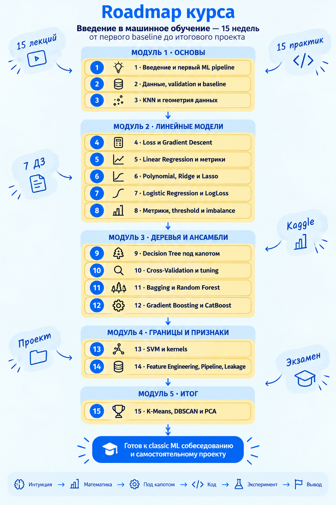

ДГТУ · Введение в машинное обучение
Введение в машинное обучение
Первая лекция · карта курса, задачи и алгоритмы
Маршрут сегодняшней пары
Сначала карта, потом детали
1. Курсзачем он, что изучим и как будем работать
2. Задачи MLобучение с учителем и без; основные семейства моделей
3. Один примерданные → обучение → проверка → вывод
Зачем этот курс
От вызова библиотеки — к пониманию решения
К концу семестра вы сможете поставить ML-задачу, выбрать baseline и модель, корректно проверить качество и объяснить результат.
Фокус — классическое ML и табличные данные; база для ML Intern / Junior Data Scientist.
Формат
15 недель · две онлайн-пары в неделю
Лекция
Проблема → интуиция → схема → необходимая математика → устройство алгоритма
Практика
Гипотеза → код в Jupyter → эксперимент → график или метрика → вывод
Октябрь–декабрь — занятия; январь — экзамен.
Программа · недели 1–5
Фундамент: данные, расстояния, обучение
1Карта ML, базовые понятия, первый pipeline
2Данные, train/validation/test, baseline, leakage
3KNN: расстояния, соседи, scaling, выбор k
4Функция потерь, производная, градиентный спуск
5Линейная регрессия и метрики регрессии
Программа · недели 6–10
Сложность модели и честная оценка
6Полиномиальные признаки, переобучение, регуляризация
7Логистическая регрессия и вероятности классов
8Метрики классификации, порог и дисбаланс
9Деревья решений: разбиения и глубина
10Cross-validation и подбор гиперпараметров
Программа · недели 11–15
Ансамбли, признаки и обучение без учителя
11Bagging, Random Forest, Extra Trees
12Gradient Boosting, CatBoost и сравнение с лесом
13SVM, margin и ядра
14Feature engineering, Pipeline, leakage, интерпретация
15K-Means, DBSCAN, PCA и итоговая карта ML
Вся программа на одной карте
Почему темы идут именно в таком порядке

Данные и эксперимент
Геометрия и оптимизация
Линейные и деревья
Ансамбли и признаки
Обучение без учителя
Что будет на практике
Каждая тема проверяется экспериментом
Гипотезанапример: изменится ли качество KNN после scaling?
Проверкаменяем один фактор, фиксируем split и метрику
Выводобъясняем результат и его ограничения
Организационно
Инструменты и оценивание
Для работы
Python, локальный Jupyter, GitHub. Учебное соревнование на Kaggle — позже.
Для проверки
Планируются практики, ДЗ, короткие проверки, проект и экзамен.
Рейтинговая система и баллы пока в разработке.
Теперь о предмете курса
Что вообще делает машинное обучение?
Обычное правило
Человек явно записывает, как из входных данных получить ответ.
Обучение по данным
Алгоритм подбирает зависимость по примерам, а затем применяет её к новым объектам.
Главное деление задач
Есть правильный ответ для обучения?
С учителем
Для каждого учебного объекта известен ответ y. Модель учится предсказывать его для новых объектов.
Цена квартиры, спам-письмо
Без учителя
Готового ответа y нет. Ищем структуру в самих признаках.
Группы клиентов, сжатие признаков
Обучение с учителем
Ответ — число или категория?
Регрессия
Предсказываем число: цену, спрос, время доставки.
\[\hat y\in\mathbb R\]
Классификация
Предсказываем класс: спам/не спам, отток/остался.
\[\hat y\in\{0,1,\ldots,K-1\}\]
Обучение без учителя
Ищем структуру без целевой переменной
Кластеризацияпохожие объекты собираются в группы
Снижение размерностипредставляем данные меньшим числом координат
Аномалииищем необычные наблюдения — обзорно
Нет гарантии, что найденные группы совпадут с «настоящими» категориями.
Карта алгоритмов · с учителем
Разные способы построить предсказание
KNNсмотрит на соседей
Линейные моделиучат веса признаков
Деревьязадают последовательность вопросов
Ансамблиобъединяют несколько моделей
SVMищет границу с запасом
Карта алгоритмов · без учителя
Здесь нет правильных ответов для обучения
K-Meansищет центры групп
DBSCANнаходит плотные области и шум
PCAищет направления максимальной вариации
Эти методы подробно разберём на 15-й неделе.
Проверка понимания
Какую задачу здесь решают?
АПо истории поездок предсказать длительность новой поездки
БПо размеченным письмам определить спам
ВРазбить клиентов без меток на похожие группы
А — регрессия; Б — классификация; В — кластеризация.
Разберём один пример
Можно ли предсказать цену квартиры?
Площадь 62 м² · 7 этаж · 12 минут до метро
Каких сведений не хватает? И что именно мы хотим получить?
Объекты, признаки, ответ
Что модель получает при обучении
| Квартира | Площадь | Этаж | Район | Цена |
|---|
| A | 42 | 3 | Центр | 8,1 млн |
| B | 68 | 9 | Север | 9,4 млн |
| C | 55 | 5 | Центр | 10,2 млн |
| Новая | 62 | 7 | Север | ? |
Числа вымышлены; трёх квартир недостаточно для реальной модели.
Формальная запись
Обучающая выборка — пары «признаки, ответ»
\[\mathcal D=\{(x_i,y_i)\}_{i=1}^{n}\]
\(x_i\)признаки i-й квартиры
\(y_i\)известная цена i-й квартиры
\(n\)число обучающих примеров
Обучение и применение
Что делают fit() и predict()
Обучение
Есть признаки и известные ответы.
model.fit(X_train, y_train)Предсказание
Есть признаки нового объекта; ответа ещё нет.
model.predict(X_new)
\[\hat y=f(x;\theta)\]
ŷ — прогноз; θ здесь обозначает обученное состояние модели
Честная проверка
Успех на знакомых квартирах ещё не успех
Trainобучаем модель и строим простой baseline
Validationсравниваем варианты и выбираем настройки
Testодин раз оцениваем выбранное решение
Точка сравнения и метрика
Как понять, помогла ли модель?
Baseline
Простейшее предсказание: средняя цена из train.
\[\hat y_{\mathrm{base}}=\frac{1}{n}\sum_{i=1}^{n}y_i\]
MAE на test
Средняя величина ошибки в единицах цены.
\[\operatorname{MAE}=\frac{1}{m}\sum_{j=1}^{m}|y_j-\hat y_j|\]
Что задаём, а что учим
Параметр ≠ гиперпараметр
Параметр
Определяется из обучающих данных. У линейной модели — веса w и сдвиг b.
\[\hat y=w^{\mathsf T}x+b\]
Гиперпараметр
Задаётся до обучения и настраивается по validation. У KNN — число соседей k.
Собираем картину
Полный маршрут ML-решения
Задача → данные → split → baseline → модель → метрика → анализ ошибок → вывод
Маршрут итеративный: плохой результат часто возвращает нас к данным или постановке.
Ближайшее продолжение
На первой практике соберём этот маршрут в Jupyter
Загрузить данные → выделить X и y → разделить → baseline → предсказание → метрика
До практики: проверьте Python, Jupyter, Git и доступ к GitHub.
Итог первой лекции
Теперь у нас есть карта курса и карта ML
С учителем — предсказываем известный тип ответа. Без учителя — ищем структуру. Любую модель проверяем на новых данных.